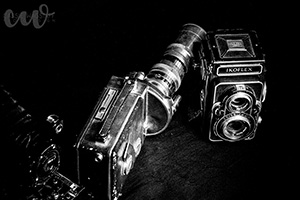

Fine Art
Fine art photography involves a lot of different types of photography. It all depends on the photographer. Anyone can go out and take a picture of something and call it art. However, fine art is something that is thought out. It is a piece that takes time. The piece also has some sort of artistic statement. There is something different about fine art that brings beauty to the simplest of things.



Be sure to check out our most popular prints lately!